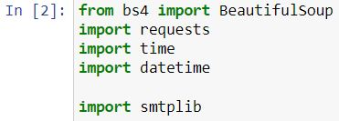
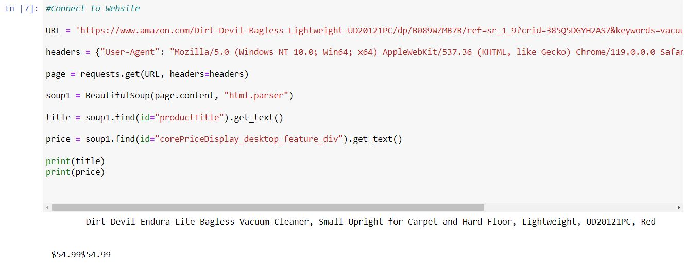
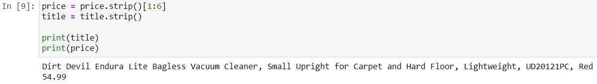
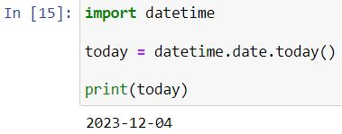
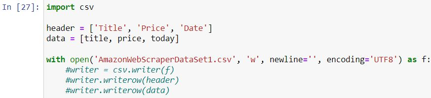
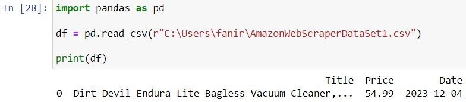
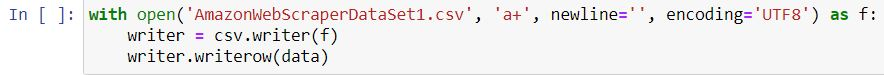
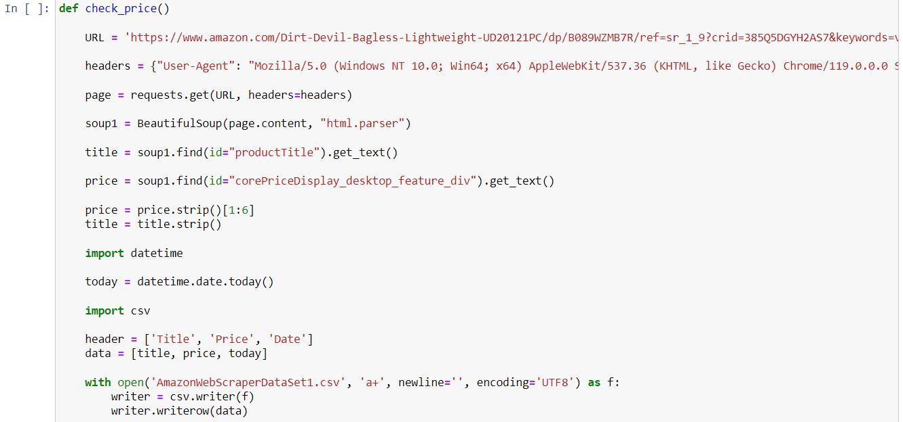
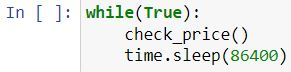

🛍️📈 Exploring Python's Web Scraping Wonders: Uncover Product Titles and Price Dynamics
Python Web Scraping Delight: Unveiling Product Insights

Embark on another Python web scraping adventure, this time navigating the digital marketplace to extract the treasures of product titles and dynamic prices. The twist? The prices dynamically update, mirroring the ebb and flow of the market. Join me in the intricacies of code as we capture the essence of products, unlocking insights into their titles and ever-changing prices. As we delve into this dynamic journey, stay tuned for the code snippets and a hands-on exploration of Python's capabilities in the realm of web scraping. If you're eager to explore the full code and unravel the secrets of web scraping, venture into my GitHub page for a hands-on experience
In laying the foundation for this web scraping escapade, the first strokes involved importing the essential tools—a quartet of libraries poised to orchestrate the digital symphony. Beautiful Soup took the lead in crafting the structure, while Time and DateTime added a temporal layer, and SMTPlib stood ready for the orchestration of email notifications. This ensemble of libraries, akin to a tech-savvy quartet, set the stage for the dynamic exploration of product titles and the ever-evolving dance of prices.
With the libraries seamlessly integrated, the journey into the digital marketplace commenced with a direct connection to the target website. The purpose of this web-scraping mission? Unearth the coveted product titles and unveil the dynamic dance of their prices. The code stood poised with a clear mission—to traverse the digital aisles, extract insights, and manifest them in the print command. As the script set its sights on the virtual shelves, the anticipation of revealing product titles and their ever-shifting prices hung in the virtual air.
In the initial output, a bit like a rowdy crowd at a bustling marketplace. Titles and prices competing for attention, doubling up where they shouldn't, and not quite aligning neatly on the page. So, what's the fix? A little digital tidying up, if you will. We introduce the heroes of the hour—stripping and cleaning. Think of it as a digital makeover, smoothing out the rough edges, and making our data display look sleek and organized. Now, the output resembles a well-arranged shelf, each product title and price finding its rightful place.
Now, let's add a time stamp to our web-scraping toolkit—the date. This step sets the stage for a dynamic grand finale—an automated update of prices. Snatching today's date, we're not just marking time; we're orchestrating a rhythm for our data. Will it be a daily beat, an hourly pulse, or a minute-by-minute dance? The choice is ours
With our ensemble of data—product titles, prices, and today's date—finely tuned, the stage is set for the grand finale. A seamless move awaits, as we usher this harmonious trio into a CSV file. Why? To unlock the power of Pandas and pave the way for effortless automation. This CSV becomes the portal, allowing us to delve into the realm of data manipulation and set the wheels in motion for future automated updates. Picture it as crafting a digital canvas, where each stroke of data finds a purpose in the tapestry of insights.
With the CSV at our fingertips, I wield the Pandas wand to summon our data into a DataFrame. This transformation is no ordinary feat; it's the key to unlocking a realm of visualization and the linchpin for our grand finale—the automated update. As the data seamlessly transitions from file to DataFrame, it becomes the canvas for our Pythonic symphony. Each row and column, a note in the melody of insights, awaits its turn to resonate in the world of visualization.
With our data elegantly nested in the Pandas DataFrame, it's time to grant Jupyter the authority to inscribe our insights back into the CSV—a crucial step in the symphony of automation. This permission, akin to handing over the conductor's baton, empowers Jupyter to dynamically update the data. As we toggle this switch, envision a seamless cycle where Python's prowess orchestrates a continuous loop of web-scraping, data manipulation, and auto-updates.
Now, think of this as the grand finale—a culmination of our Pythonic journey. I've woven together every piece of code we've crafted, creating a single, powerful script. It's like putting all the instruments in an orchestra together to play a beautiful piece. With a swift run in Jupyter, our code becomes a symphony, orchestrating the dance of web scraping, data manipulation, and dynamic updates. It's the moment when everything we've worked on harmonizes into a seamless flow, creating a digital masterpiece.
As we approach the grand finale, one last flourish remains—to introduce the prompt for automated updates, the pièce de résistance in our Pythonic performance. Picture it as giving our code a self-renewing mechanism, an autonomous dance where it effortlessly retraces steps, web scrapes anew, and updates our data. With this final prompt, our symphony transforms into a perpetual melody, adapting to the rhythm of the digital marketplace.
As the curtains draw to a close on this Pythonic performance, I extend my heartfelt thanks to you, the audience, for joining me on this coding symphony. Together, we've journeyed through the intricacies of web scraping, data manipulation, and the art of automation. Your curiosity and engagement have added depth to this digital composition. Should you wish to explore the nuances further or simply revisit the melody, the script and its orchestration await on my GitHub page. Here's to the rhythm of code, the dance of data, and the continuous harmony of learning.